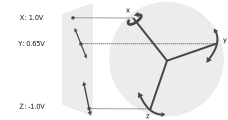
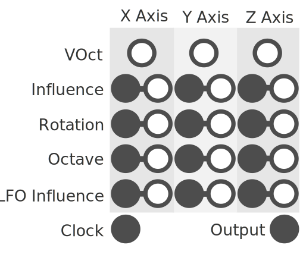

Quaternion based oscillation.
SLURP has 3 oscillating sources, one for each rotational axis. Each axis has an LFO that modulates its rotation. Rotating one axis will in turn move the other two axis. The final position of each axis is then projected into 2d space and its positional value becomes the output.
Each oscillator (or axis) has a VOct, Influence, Rotation, Octave, and LFO Influence parameter.
Note: setting all 3 VOct inputs to your desired pitch will keep the rotational dynamics you've created consistent.
The projection plane is a static viewing direction that the axis position gets projection onto. You can change this in the modules context menu, there are 3 projections to choose from: X, Y, and Z (defaults to Z).
Stereo can be toggled with the stereo button . There are three settings in total: mono , full stereo , and side stereo only. This splits the projected waveform based on how far it is to one side of the sphere.
Enable polyphonic support for SLURP by increasing its spread value. Pressing the spread button will cycle though 1-16 voices. You can also right click this to select a specific value with its context menu. Each new voice is a slightly offset rotation from the previous and will output to its own channel.

BETA Dephase Algorithm How SLURP performes its dephasing, the old setting is the original method that doesn't play well with low sub audio frequencies. The new method is the same as the VST and can handle low and high frequencies and more accurately follows the clock.
The modules context menu has a theme submenu where you can change the background to a solid white or black color if you are having trouble with the default background design.
Knob and plug labels can be toggled via the toggle labels option in the context menu.